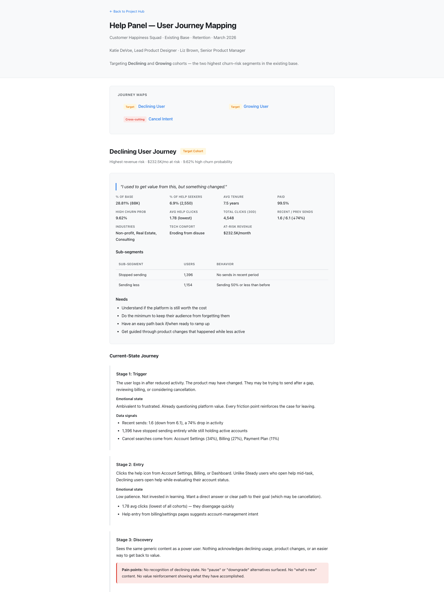

Overview
The help panel missed a moment that mattered.
People searching for cancellation had different needs: some wanted to leave, some needed a lower-cost plan, and others needed help getting value from the product. The panel gave those situations much the same response.
I led the design investigation with a senior product manager. I connected help behavior to customer cohorts, mapped the points where the experience stopped supporting a decision, and proposed a staged response.
The goal was to make relevant options visible while preserving a clear path to cancellation.
The Problem
Long-tenured customers were asking about leaving.
The analysis identified declining-usage and growing-use cohorts with different reasons to seek help. Together, at-risk segments represented more than 51% of the active base.
In the declining-use cohort, sending had dropped 74%; nearly 1,400 customers had stopped sending while still paying. I used that behavior to investigate whether the panel could help someone return to a useful task.
The growing-use cohort explored more campaign types and had the highest help-click engagement. I treated this as a different need from cancellation: guidance that connected a new capability to the work someone was trying to do.
Across those groups, 2,883 users searched for cancellation in 90 days. Their average tenure was 6.6 years. That made the search a useful place to investigate what had changed in their relationship with the product.
Research Approach
Connect the search to what happened afterward.
I analyzed help searches, cohort behavior, and churn outcomes to understand who was using the panel and what they did next. That established a baseline before proposing a new interaction.
“Help and support usage is nearly identical between retained and canceled users. The current help panel is equally ineffective for both — which means any improvement is untapped territory.”
Comparing retention patterns in other products helped identify options to investigate: clearer pause information, reason-based routing, plan changes, and a route to a specialist.
Journey Mapping
Use the same journey to compare different needs.
I mapped declining-use, growing-use, and cancellation-intent journeys through the same stages: trigger, entry, discovery, engagement, resolution, and outcome. This made it easier to see where a shared help panel needed different responses.
The cancellation journey had a defined population and a 52.7% churn baseline. I used it to connect the experience problems to an intervention I could evaluate with the team.

Key Findings
Make alternatives visible before adding personalization.
The findings shifted the proposal from general content cleanup toward the cancellation journey. The first design question was whether people could find a relevant alternative at all; more advanced personalization would have little value if those basic paths remained hidden.
Design Response
Offer a relevant alternative without blocking the exit.
I designed the flow to bring pause, a lower-cost plan, and specialist support into view when they matched the person’s need. Cancellation remained available; the design needed to help someone make an informed choice rather than send everyone through the same retention script.
I also separated account cancellation from searches about canceling an automation. For customers looking to continue, the proposal connected help to a practical next step, such as sending a campaign or reviewing plan fit.
Milestone Roadmap
Start with visibility, then earn the next investment.
I proposed three stages. The first improved the paths people could already use. Later stages added account-specific guidance and, eventually, a conversational interaction. Each stage could be evaluated before committing to the next.
Make pause, plan changes, and specialist support visible alongside cancellation. Separate account cancellation from other cancel searches, and give articles a clear next step. Proposed pause-discovery target: 3% to 15% or more.
Use account context to offer more relevant guidance, plan options, and a return path for paused customers. Evaluate this after the first milestone establishes whether people can find and use the available options.
Explore a conversational flow that can clarify the person’s need and hand off to a specialist with context. This was a proposed later stage, not a delivered retention outcome.
Business Case
Size the opportunity without calling it a result.
I modeled potential retained revenue using the observed cancellation-search cohort. The scenarios below estimate quarterly revenue at five-, ten-, and fifteen-percentage-point improvements in churn.
These are planning scenarios, not realized savings. They gave product and leadership a way to compare the investment with the size of the opportunity; a release and follow-up measurement would be needed to establish an effect.
Measurement
Measure the immediate choice and what follows.
I defined a measurement plan around finding alternatives, choosing a path, and what happened afterward. Pause visibility could show whether the interface changed behavior; later churn and return-to-use measures would show whether that choice led to continued value.
Status & What’s Next
The proposal reached an interactive first milestone.
I completed the behavioral analysis, journey maps, UX review, and desktop and mobile prototypes for the first milestone. The design made the proposal specific enough for stakeholders to review the flow and its measurement plan.
I do not have a post-release churn result for this work. The next evaluation would compare alternative discovery and follow-through against the established baseline, then use those findings to decide whether to invest in personalization.
Reflection
The business case depended on understanding the user’s choice.
The useful connection was between the cohort analysis and the interaction. A customer trying to reduce costs needs a different response from someone unable to finish a task. Treating every cancellation search as the same intent would have weakened both the experience and the retention strategy.
A staged proposal let me connect that distinction to an investment decision: improve the existing options first, measure what changes, then decide which more complex interventions are justified.